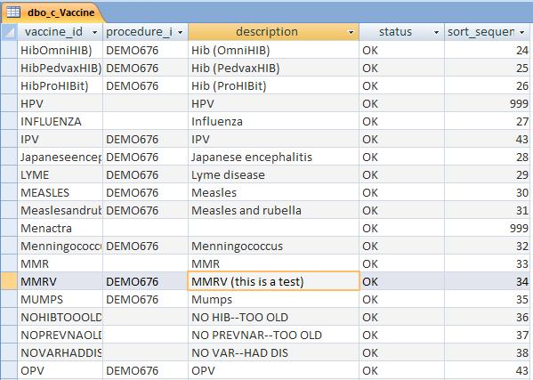

| Solution: |
Vaccines are created using the same screens and functions as Prescription Drugs. The names of both vaccines and drugs cannot be changed in the interface after initially being saved. If you need to change the name of a vaccine, you will need to perform this change in the tables.
|
| Details: |
1. Open the db in Access. 2. Open the dbo_c_Vaccine table. 3. Locate the vaccine description you want to change. The text in the Description field will appear on the Vaccines and Diseases list from the Configuration tab as well as the Add New Past Immunization and Select Vaccine screens.  4. Change the vaccine description as desired. 5. Save the changes and confirm in encounterPRO on the Vaccines and Diseases list. |
| Symptoms: |
| ID: 040902213483807 | Last Modified: 01/22/2009 01:48:37 PM |